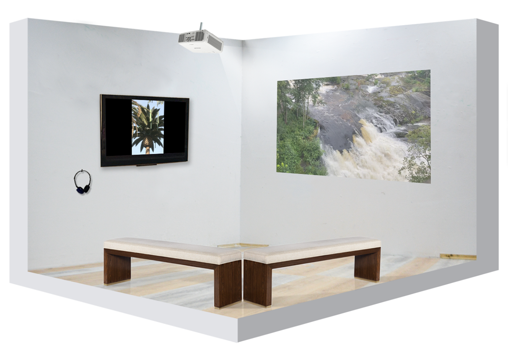

Kim Svensson & Dirkjan van der Linde
Table Of Content
Title of show
Table Of Content
Titles of work
Crescendo (To Think Of Water As One Body)
Index (Starring John the Radio Presenter)
Kim Svensson (b. 1995, Sweden) graduated with a BFA from Oslo National Academy of the Arts in 2019. His work has previously been exhibited at Delfi (Malmø), Kunstnernes Hus (Oslo) and Destiny’s Atelier (Oslo).
Dirkjan van Der Linde (b.1959, the Netherlands) His work has previously been exhibited at Norsk Skulpturbiennale, Vigelandsmuseet, Oslo (Oslo), Henie Onstad Kunstsenter (Høvikodden), PODIUM (Oslo) and Galleri Riis (Oslo).

Crescendo (To Think Of Water As One Body)
Video stills
Dirkjan van der Linde
2020
Video w. sound
10:02 min
Index (Starring John the Radio Presenter)
Video stills
Kim Svensson
2020
Video w. sound
06:06 min